首页 > 编程笔记
电容是什么
电容元件简称电容，其图形符号可以表示为图 1a) 所示。电容是由间隔以绝缘介质的两块金属组成。当电容的两个极板之间加上电源时，电容就会储存电荷，当移除电源后，电容可以保持电荷的存在，因此可以认为电容是一种储能元件。
在理想情况下认为电容具有以下特性：电容两端的电荷Q与电压U为代数关系。线性电容的元件特性为：
其中，C 为电容元件的参数，称为电容元件的电容值，单位为 F（法拉，简称法），由于单位法拉太大，因此在实际应用中常用单位是 μF（微法）和 pF（皮法）。Q 为电容两端的电荷，单位为 C（库伦，简称库），以 Q 和 U 作为坐标轴可以画出电容的库伏曲线，如图 1b) 所示，线性电容的库伏曲线是过原点的直线。
但是在实际应用中，电荷是很难测得到的，因此需要确定电容两端电压与电流的关系。因为单位时间的电荷变化就是电流，即：
上式表明流过电容的电流与电压的变化率成正比。当电容两端电压发生变化的频率越快，通过电容的电流就越大。当电容两端的电压为直流，那么通过电容两端的电流为零。即电容在电路中起到的作用是：通交流、隔直流。
相反地，也可以根据流过电容的电流求解电容两端的电压，即：
上式表明电容两端的电压不仅与电容从 t0 到 t1 时刻流过的电流有关，还与 t0 时刻的电压 u（t0）有关，因此电容元件是一种有“记忆”的元件。
一个理想的电容吸收的功率为：
则，电容从 t0 时刻到 t1 时刻吸收的能量为：
如初始时刻 t0 电容的能量为 0，那么在 t 时刻电容吸收能量可以写为：
假如在电容两端通入正弦交流电压，即 U=Umsinωt，在 t 时刻通过电容电流 I 为：
其中，Um 为正弦波形的幅值，当常数 ω=1、电容 C=1F 且赋值 Um=1V 的条件下，可求得：
此时电容两端电压与电流关于时间 t 的波形如下图所示：
通常，将同一个周期内两个波形与横坐标的两个交点（正斜率过零点或负斜率过零点）之间的坐标差值看成两者的相位差，先到达零点的波形超前后到达者。可以看出，电容两端电压 U 前流过电容电流 I，相位相差 90°。图 2 虽然为 ω、Um、C 取特定值时产生的波形，但由上面的公式可以得知，这些参数只会影响波形幅值，并不会影响电容的电压与电流之间相位的关系。
一个电容的漏电越小，可以认为其质量越好。测量电容漏电流大小的一般方法为：将可调直流稳压限流电源调节到电容额定工作电压，并联到电容两端，待电源输出电流恒定不变时，可认为这是的电流为该电容产生最大漏电电流的大小。
与电阻相同，市面上能买到的电容也只有几种固定电容值的电阻，也可以通过电容的串并联得到非标准的电容。但是与电阻不同的是，电容并联时等效电容值变大，电容串联时等效电容值减小。
电容串联时计算公式为：
电容并联时计算公式为：
因为电容是由间隔以绝缘介质的两块金属组成，不同绝缘介质与金属的组合形成了现实生活中多种多样的电容。
可以从封装形式上将电容分为接线柱式、直插式和贴片式 3 种，接线柱式电容实物如图 3a) 所示，此类电容通常可以承受非常高的电压或非常大的电流，因此其体积也非常大；直插式电容体积次之，实物如图 3b) 所示；贴片式电容体积最小，实物如图 3c) 所示。
对于体积较大的电容通常在表面对容量直接进行标注。对于小体积的电容则采用数字来标明容量。与电阻类似，采用 3 个数表示实际电容大小。但需要注意的是电容的单位，默认单位是皮法（pF）。例如，电容“473”表明电容值
从制作工艺与材料上可以将电容分为瓷介电容、涤纶电容、云母电容、独石电容、铝电解电容、钽电解电容等，具体如下表所示：
按级性可将电容划分为有极性和无极性电容。有极性电容一般用于直流电源中，其图形符号可以表示为图 4a) 所示，在实际连接过程中需要注意其正反极。对于接线柱式电容，套管上有明确的正负极标识，正极用“+”、负极用“-”表示，如图 4b) 所示；对于直插式电容正极一般引脚长、负极引脚短，如图 4c) 所示；有的也会和接线柱式电容一样在套管上进行标记；对于贴片式铝电解电容在外观有半边黑色被涂黑标记对应引脚为负极，如图 4d) 所示；对于贴片钽电解电容会在表面有一横杠，代表正极，如图 4e) 所示。
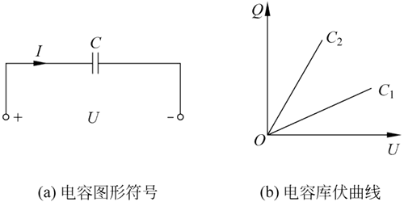
图 1 电容元件图形符号与库伏曲线
图 1 电容元件图形符号与库伏曲线
在理想情况下认为电容具有以下特性：电容两端的电荷Q与电压U为代数关系。线性电容的元件特性为：
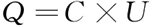
其中，C 为电容元件的参数，称为电容元件的电容值，单位为 F（法拉，简称法），由于单位法拉太大，因此在实际应用中常用单位是 μF（微法）和 pF（皮法）。Q 为电容两端的电荷，单位为 C（库伦，简称库），以 Q 和 U 作为坐标轴可以画出电容的库伏曲线，如图 1b) 所示，线性电容的库伏曲线是过原点的直线。
但是在实际应用中，电荷是很难测得到的，因此需要确定电容两端电压与电流的关系。因为单位时间的电荷变化就是电流，即：
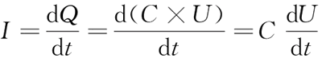
上式表明流过电容的电流与电压的变化率成正比。当电容两端电压发生变化的频率越快，通过电容的电流就越大。当电容两端的电压为直流，那么通过电容两端的电流为零。即电容在电路中起到的作用是：通交流、隔直流。
相反地，也可以根据流过电容的电流求解电容两端的电压，即：
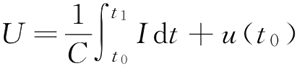
上式表明电容两端的电压不仅与电容从 t0 到 t1 时刻流过的电流有关，还与 t0 时刻的电压 u（t0）有关，因此电容元件是一种有“记忆”的元件。
一个理想的电容吸收的功率为：
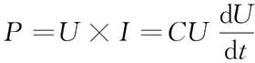
则，电容从 t0 时刻到 t1 时刻吸收的能量为：
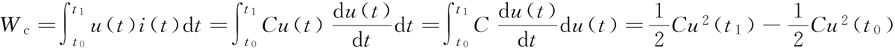
如初始时刻 t0 电容的能量为 0，那么在 t 时刻电容吸收能量可以写为：
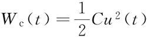
假如在电容两端通入正弦交流电压，即 U=Umsinωt，在 t 时刻通过电容电流 I 为：
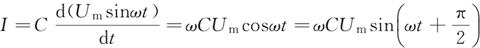
其中，Um 为正弦波形的幅值，当常数 ω=1、电容 C=1F 且赋值 Um=1V 的条件下，可求得：
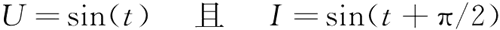
此时电容两端电压与电流关于时间 t 的波形如下图所示：
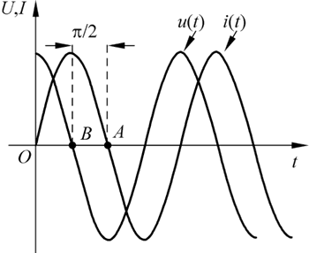
图 2 电容两端电压和流过电流的波形
图 2 电容两端电压和流过电流的波形
通常，将同一个周期内两个波形与横坐标的两个交点（正斜率过零点或负斜率过零点）之间的坐标差值看成两者的相位差，先到达零点的波形超前后到达者。可以看出，电容两端电压 U 前流过电容电流 I，相位相差 90°。图 2 虽然为 ω、Um、C 取特定值时产生的波形，但由上面的公式可以得知，这些参数只会影响波形幅值，并不会影响电容的电压与电流之间相位的关系。
实际电容
以上考虑的为理想电容元件，但在实际应用中，由于制造工艺的限制，电容中会存在内阻消耗自身能量，一般称为漏电。如果将电容作为储能元件使用或者用于低功耗的应用中，则应考虑其漏电大小。一个电容的漏电越小，可以认为其质量越好。测量电容漏电流大小的一般方法为：将可调直流稳压限流电源调节到电容额定工作电压，并联到电容两端，待电源输出电流恒定不变时，可认为这是的电流为该电容产生最大漏电电流的大小。
与电阻相同，市面上能买到的电容也只有几种固定电容值的电阻，也可以通过电容的串并联得到非标准的电容。但是与电阻不同的是，电容并联时等效电容值变大，电容串联时等效电容值减小。
电容串联时计算公式为：
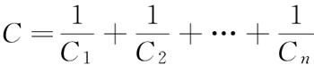
电容并联时计算公式为：
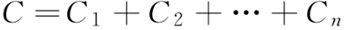
因为电容是由间隔以绝缘介质的两块金属组成，不同绝缘介质与金属的组合形成了现实生活中多种多样的电容。
可以从封装形式上将电容分为接线柱式、直插式和贴片式 3 种，接线柱式电容实物如图 3a) 所示，此类电容通常可以承受非常高的电压或非常大的电流，因此其体积也非常大；直插式电容体积次之，实物如图 3b) 所示；贴片式电容体积最小，实物如图 3c) 所示。
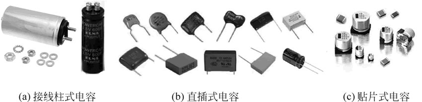
图 3 电容实物图
图 3 电容实物图
对于体积较大的电容通常在表面对容量直接进行标注。对于小体积的电容则采用数字来标明容量。与电阻类似，采用 3 个数表示实际电容大小。但需要注意的是电容的单位，默认单位是皮法（pF）。例如，电容“473”表明电容值
C=47×103pF=47000pF=0.047μF。从制作工艺与材料上可以将电容分为瓷介电容、涤纶电容、云母电容、独石电容、铝电解电容、钽电解电容等，具体如下表所示：
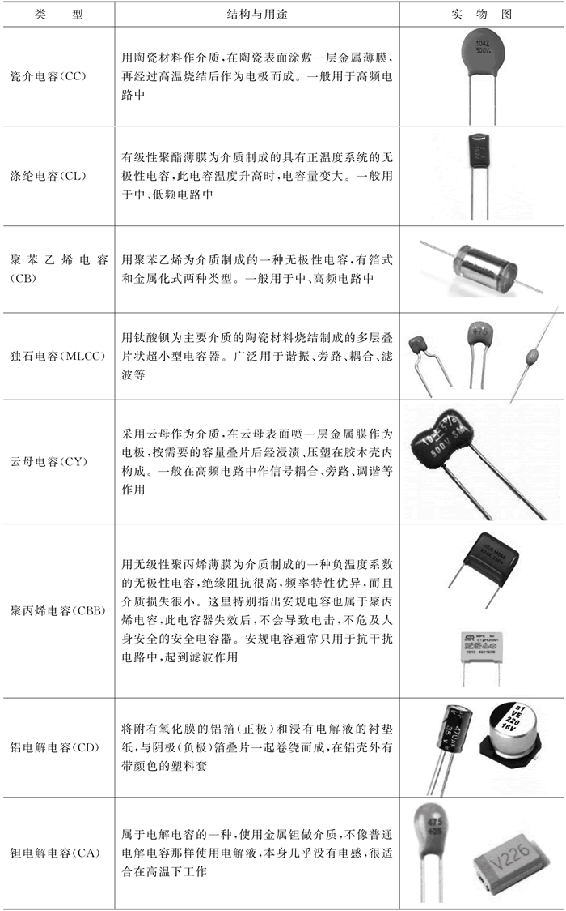
表：不同材料电容结构与实物表
表：不同材料电容结构与实物表
按级性可将电容划分为有极性和无极性电容。有极性电容一般用于直流电源中，其图形符号可以表示为图 4a) 所示，在实际连接过程中需要注意其正反极。对于接线柱式电容，套管上有明确的正负极标识，正极用“+”、负极用“-”表示，如图 4b) 所示；对于直插式电容正极一般引脚长、负极引脚短，如图 4c) 所示；有的也会和接线柱式电容一样在套管上进行标记；对于贴片式铝电解电容在外观有半边黑色被涂黑标记对应引脚为负极，如图 4d) 所示；对于贴片钽电解电容会在表面有一横杠，代表正极，如图 4e) 所示。
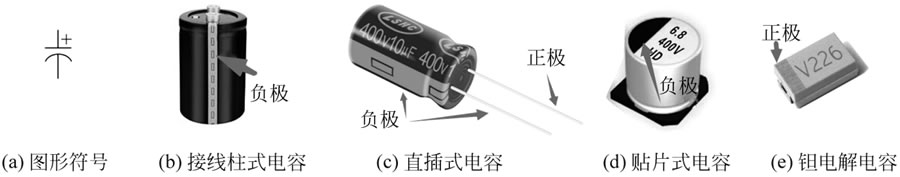
图 4 有极性电容图形符号及实物正负极判定
图 4 有极性电容图形符号及实物正负极判定
关注公众号「站长严长生」，在手机上阅读所有教程，随时随地都能学习。内含一款搜索神器，免费下载全网书籍和视频。

微信扫码关注公众号